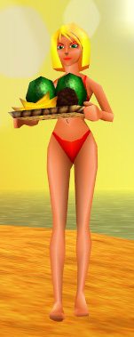

¿Qué necesito?
- Primero necesitarás la rom europea del Banjo-Kazooie. Como se especifica en la sección Descargar, para el correcto funcionamiento del parche y la traducción es muy recomendable usar la rom llamada Banjo-Kazooie (E) (M3) [!].
- El parche, que se obtiene también en la sección Descargar.
- Un emulador de Nintendo 64. Recomendamos usar el Project64 1.6. Se puede obtener de su página oficial: http://www.pj64-emu.com/
- Un PC que no sea del milenio pasado y que pueda hacer funcionar un emulador de N64 a velocidades decentes.
¿Dónde consigo la rom?
La pregunta del millón, y no te la vamos a responder aquí. Te las tendrás que apañar para encontrarla dado que aquí no vamos a ofrecer descargas ilegales.
Ya he conseguido el juego, pero el parcheador me da error...
El proceso de parcheo es muy sencillo, por lo que el único error que puede dar el parcheador es en el caso de que no tengas una versión correcta de la rom. En ese caso, intenta buscar otra por ahí, a ver si tienes más suerte.
Ya tengo el juego parcheado... ¿Y ahora qué?
El parcheador creará un archivo llamado Banjo-Kazooie (E) (M3) [T-Spa].z64. Ésa será la rom traducida. Por lo que simplemente tendrás que abrir la rom con el emulador... ¡y a jugar!
Ya tenía empezada una partida, pero no quiero volver a empezar...
Si no quieres, no tienes por qué hacerlo. La partida de la rom original es totalmente compatible con la rom parcheada. De hecho, es compatible con todas las versiones del juego.
He visto un error ortográfico y/o tipográfico
En ese caso, puedes comunicárnoslo mediante el formulario de contacto, o en nuestro foro, en la sección de Banjo-Kazooie.
¡El juego se me ha quedado colgado!
El juego ha sido testeado a fondo, y se han solucionado los posibles cuelgues que tenía, así que no debería fallar. Lo más probable es que sea debido a una versión incorrecta de la rom.
Si pruebas otra versión, o crees que tienes una versión correcta y sigue dando problemas, no dudes en contactar con nosotros mediante el formulario de contacto, o en nuestro foro, en la sección de Banjo-Kazooie.
Si contactas con nosotros, necesitaremos saber con la mayor precisión posible dónde ha ocurrido el cuelgue, así que nos tendrás que indicar el nivel donde ha ocurrido, con qué personaje estabas hablando y, si puede ser, decirnos con la mayor exactitud posible, cuál es la frase que ha aparecido justo antes de colgarse. Así se podrá localizar lo que causa el fallo fácilmente.
El juego es una mierda, ¿por qué no traducís uno de esos juegos para machotes con sangre y tías buenas?
¿No te basta con esto? ;_;
